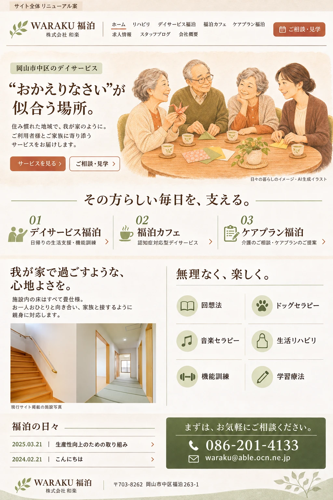

内蔵gpt-image2で、文字を含めて生成したデザイン原案です。動くサイトでは、原本の写真とHTMLの文字を使い、画面幅に合わせて読みやすく配置しています。
トップページ

ケアプラン福泊

生成デザイン内の施設写真部分は参考イメージです。動くサイトには、現行サイトから保存した写真を使用しています。生成イラストの人物は、実際のスタッフやご利用者様の肖像ではありません。
内蔵gpt-image2で、文字を含めて生成したデザイン原案です。動くサイトでは、原本の写真とHTMLの文字を使い、画面幅に合わせて読みやすく配置しています。

生成デザイン内の施設写真部分は参考イメージです。動くサイトには、現行サイトから保存した写真を使用しています。生成イラストの人物は、実際のスタッフやご利用者様の肖像ではありません。